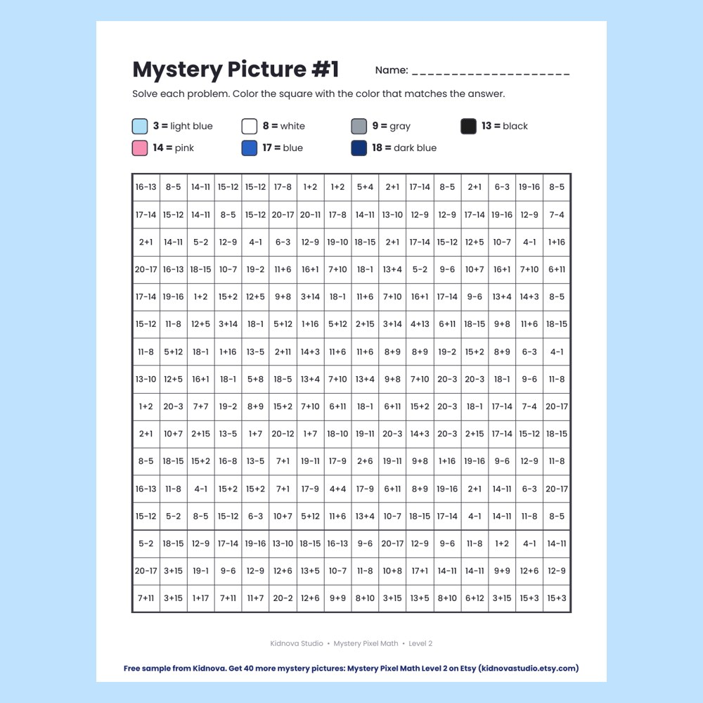

Fun Ways to Practice Addition and Subtraction Within 10
By Kidnova · Updated November 2026
Adding and subtracting within 10 is one of the first big steps in math, and it usually happens between preschool and first grade. Children learn it best with real objects, pictures and games before worksheets. Here are simple activities you can do at home to make these facts feel easy and fun.
Start with real objects
Use toys, blocks, buttons for older children, or snacks. Show 3 cars, add 2 more and count them all together. Then take some away and count what is left. Touching and moving objects helps children understand what plus and minus really mean.
Teach counting on
Once your child can count objects, teach a faster way: start from the bigger number and count up. For 6 + 3, say "six" and count "seven, eight, nine" on your fingers. For subtraction, children can count back in the same way.
Practice the pairs that make 10
1 and 9, 2 and 8, 3 and 7, 4 and 6, 5 and 5. Knowing these pairs by heart makes a lot of later math easier. Try a quick game: you hold up some fingers, and your child shows how many more make 10.
Use a number line
Draw a line with the numbers 0 to 10 on paper or with tape on the floor. Children hop forward to add and backward to subtract. It turns a math problem into movement, which many children love.
Color by sum and color by difference
Math coloring pages give children many problems to solve in a calm way. Each shape has a small problem, and the answer tells them which color to use. When the math is right, a picture appears, so children can check their own work.

Free: Mystery Pixel Math page (1 page)Addition and subtraction within 20. Download and print today, no sign-up needed. Fun Math Coloring: Addition & Subtraction29 color by sum and color by difference pictures, all answers from 0 to 10.
Fun Math Coloring: Addition & Subtraction29 color by sum and color by difference pictures, all answers from 0 to 10.
Play quick math games
Roll two dice and add the dots. Play shop with prices from 1 to 10. Ask small questions in everyday life: we have 7 grapes and you ate 2, how many are left? Short, frequent practice beats long sessions.
Signs your child is ready for more
When your child answers most facts within 10 without counting on their fingers, they are ready to move on to problems within 20. If they still count every time, stay with 10 a little longer. There is no rush.
Final thoughts
Keep it playful and short, and use real objects whenever a problem feels hard. Children who understand what adding and taking away mean, not only the answers, build a strong base for all the math that comes next.